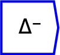
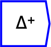
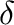
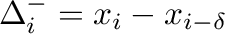
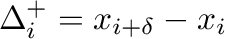

Computes the nearest neighbour difference along a given direction.


These operators can be placed on the canvas in two ways:
 ;
or
;
or

) can be used to specify the number of neighbours to skip in computing the differences. For example if your data is monthly and you want to calculate changes per year, you would set to 12. The length of the dimension being differenced is reduced by in the result.It comes in two different forms which differ only in how the resultant x-vector is calculated.

, and
, where refers to the x-vector
index.
refers to the x-vector
index.
Where there is more than one dimension to data, the user needs to specify the axis along which the difference operation is calculated.